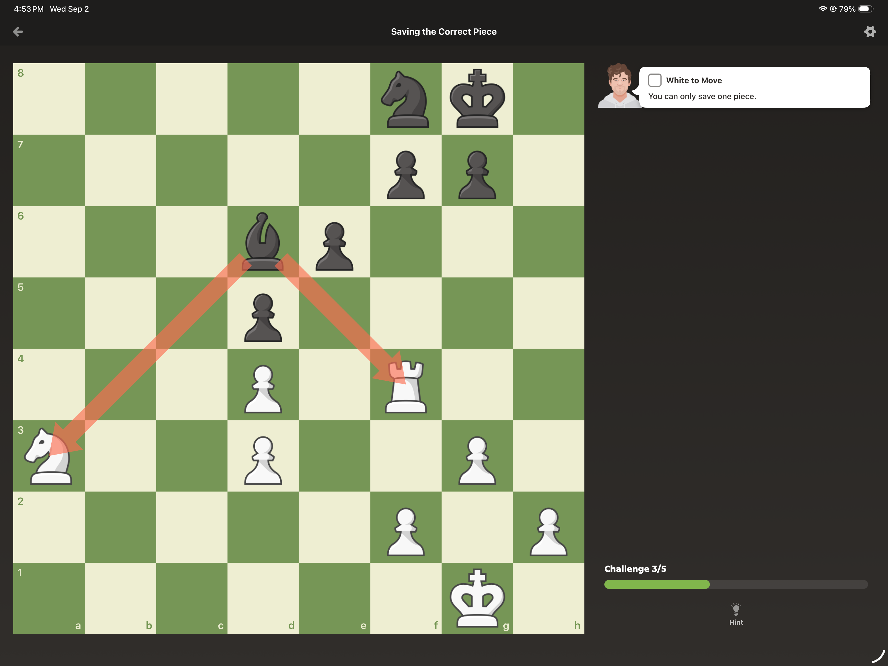
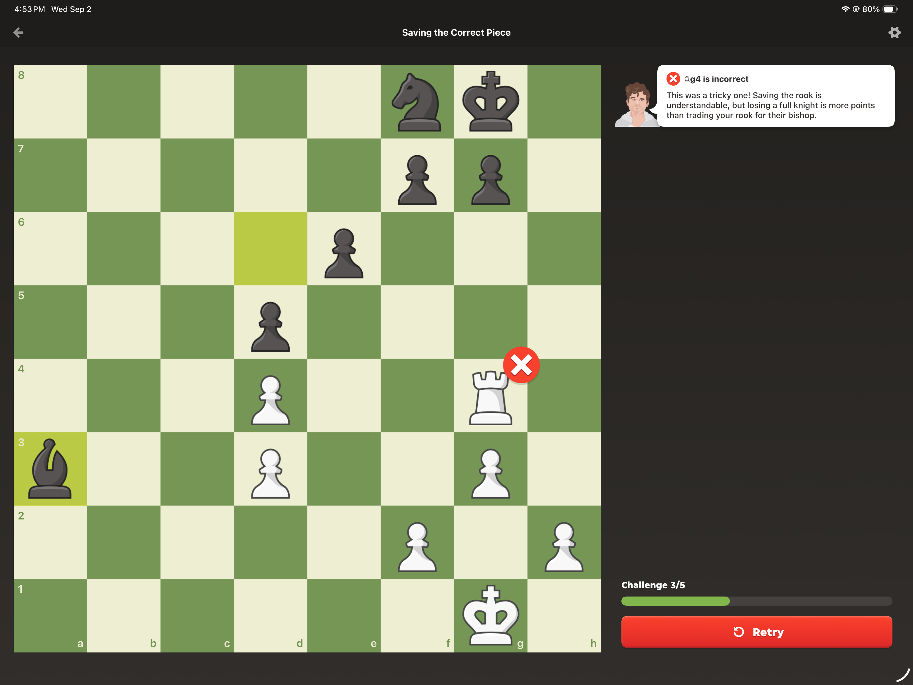

Where the idea began
The available original ChatGPT conversation is titled Chess Tactic Explanation. It starts with the user saying “He did not get this” and attaching two screenshots from a lesson about saving the correct piece. The assistant explained the material arithmetic: an undefended knight lost for nothing costs three points; a rook traded for a bishop costs two, after the recapture.
The user then described something larger: selectable AI difficulty, scrutiny of every move, questions about both sides' choices, alternatives within alternatives, snapshots and a way to return to the actual game. The assistant restated this as an interactive chess laboratory with a branching timeline.
{kind=link}

{kind=link}

The original product request, in the user's words
“Suppose I pause on some formation and I said if I run this, if I run that, if I have done this.”
“I can ask them that what if he wasn't played this, if he had played that.”
“What if chains of many of things, and then come back and again start from the snapshot and move to the actual thing that I played.”
These are excerpts from the recovered conversation. The full available text and the images are in the library, alongside the raw conversation record. The historical assistant's explanations are preserved as historical statements, not independently verified tactical proof.
The research request
The user asked for extensive research on products already available, upcoming products and credible leaks, market size, YC potential, an open-source route, and requirements beyond coding agents, subscriptions and API keys.
The provided startup report is dated September 3, 2026. It covers competitors, TAM/SAM/SOM, business models, academic work, engines, human-move modeling, architecture, UX, fair play, licensing, go-to-market, roadmap, staffing, budgets and metrics. Its conclusion recommends building a branching debugger and eventually a broader tutoring capability.
The companion note compares learning products and curricula, gives regional price observations dated August 31, and suggests practice routines. It prefers Chess.com Platinum as an integrated paid option and discusses free alternatives. Its rankings and rating bands are opinions, not standardized product experiments.
The setup request in this project
The user asked to review all supplied research, configure “mat pack,” Unslop, Gstack and OpenSpec, initialize Git, understand the startup, and give thoughts. “Mat pack” was interpreted as Matt Pocock's skills and stated during the run. Unslop was represented by Pstack Unslop and the separate Clay fork.
The resulting setup used existing canonical local skills rather than copying entire packs. It created project guidance, a source manifest, a repeatable linker, local issue conventions and a draft OpenSpec change. The narrower first-build proposal was a recommendation; it did not overwrite the full adjustable-opponent vision.
What the first assessment said
The assistant recommended testing completed-game exploration first. It pointed out existing overlap in Lichess Studies and Chessvia, rejected treating assumption-based TAM numbers as demand, and called for a chess educator plus real learners. It identified inconsistent Na3 notation in the research. It also reported the Git signing failure instead of claiming a successful commit.
The complete earlier assessment is in the library. The delivery chapter records the actual work and its verification boundaries.
The present HTML request
The user asked for a beautiful multi-page, navigation-based HTML report containing all documents, discussion, supplied research, work in this and the previous run, investor and angel-investor perspectives, desired product shape, target customers, pricing and an honest opinion.
This dossier responds to that request. It includes full source-document reading pages rather than only summaries. Original bytes remain available as downloads. New interpretation is marked as proposed or analytical, and checked prices are distinguished from historical research values.
What is available, and what is not
The archive contains the full available original conversation returned by the connected conversation tool, the original research files, the two lesson images, project documents and a faithful summary of this project's discussion and work. It is not a verbatim export of every internal tool call, hidden reasoning, or inaccessible earlier conversation. No such material is invented.
No new customer interviews, outreach, human coaching study, model training or product trial took place. The source reports' private-market and pricing claims remain subject to the limits stated in their reading pages.